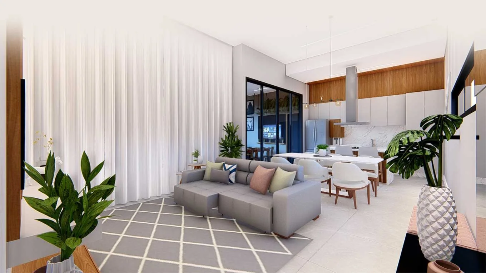
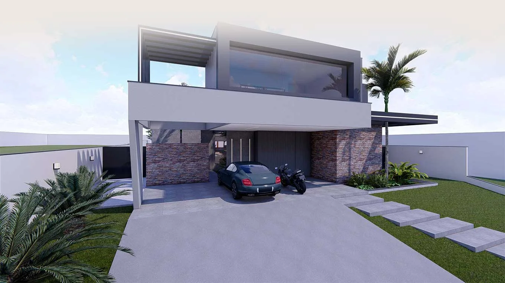

Começa por você.
Entendemos rotina, prioridades, terreno, referências e expectativas antes de desenhar.



Criamos projetos personalizados, coordenamos as disciplinas técnicas e acompanhamos cada etapa da obra para transformar escolhas em uma casa funcional, coerente com o orçamento e bem executada.
Projeto, compatibilização, orçamento e execução tratados como partes da mesma jornada.
A casa começa antes da obra. Começa quando cada decisão conversa com a próxima.
Do estudo inicial ao acompanhamento da execução, organizamos as decisões para reduzir conflitos e retrabalho.


A AZO conecta arquitetura, compatibilização, decisões de orçamento e execução para que cada etapa alimente a próxima.
Rotina, terreno, prioridades e contexto.
Conceito, implantação, ambientes e materialidade.
Compatibilização técnica, orçamento e decisões.
Acompanhamento próximo da execução até a entrega.


Entendemos rotina, prioridades, terreno, referências e expectativas antes de desenhar.
Transformamos o briefing em arquitetura, interiores e soluções alinhadas ao contexto.
Compatibilizamos disciplinas e orientamos escolhas para reduzir conflitos na obra.
Acompanhamos cronograma, fornecedores e execução para preservar a intenção do projeto.
Conte em que etapa você está. A conversa inicial ajuda a entender o serviço mais adequado para o seu momento.
Solicitar uma conversa ↗